"때가 이르매 거두리라" 대구 8개 노회 목회자 한마당… 대경노회 우승기 품었다
제29회 대구지역 8개 노회 목회자 친선체육대회가 10월 29일 대구복합스포츠타운 시민체육관에서 열렸다. 반년 넘게 손발을 맞춘 준비위원회의 촘촘한 팀워크 속에 예배부터 시상식까지 하루 일정이 순조롭게 이어졌다.
대구지역 8개 노회 목회자들이 가을 하루 목회 현장을 잠시 내려놓고 한 체육관에 모였다. 대구교직자협의회(대표회장 정명철 목사)가 주최하고 대구수성노회(노회장 이정근 목사)가 주관한 「제29회 대구지역 8개 노회 목회자 친선체육대회」가 10월 29일(목) 오전 9시 30분 대구복합스포츠타운 시민체육관에서 열렸다. "보라 형제가 연합하여 동거함이 어찌 그리 선하고 아름다운고"(시 133:1)를 표어로 내건 이날 대회에서 목회자들은 배구와 족구, 올해 처음 도입된 축구 승부차기로 기량을 겨뤘고, 사모와 어르신 목회자들도 번외경기로 함께 어울렸다. 종합 우승기는 대경노회에 돌아갔다.
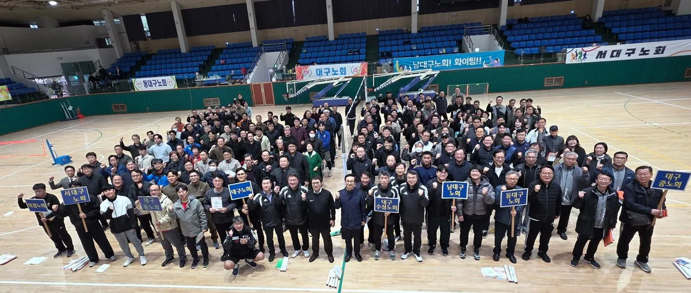
예배로 연 하루 — "포기하지 아니하면 때가 이르매"
대회는 예배로 시작됐다. 1부 예배는 준비위원장 박은제 목사(성원교회)의 인도로 찬송가 359장 「천성을 향해 가는 성도들아」를 함께 부르며 문을 열었다. 대경노회장 김성택 목사(칠곡내일교회)가 기도하고, 남대구노회장 여창섭 목사(논공교회)가 갈라디아서 6장 9절을 봉독했다.
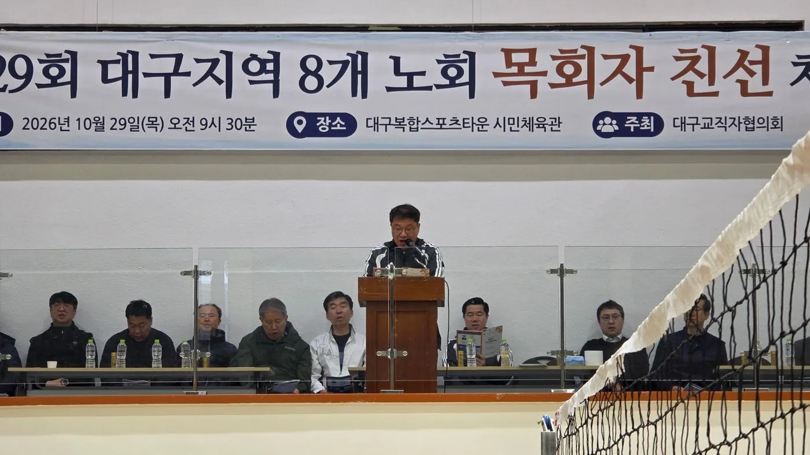
설교는 대회장인 대구수성노회장 이정근 목사(드림교회)가 「때가 이르매 거두리라」라는 제목으로 전했다. "우리가 선을 행하되 낙심하지 말지니 포기하지 아니하면 때가 이르매 거두리라"는 본문 말씀은, 한 해 동안 묵묵히 목양의 자리를 지켜 온 목회자들에게 위로와 격려로 다가갔다. 예배는 동대구노회장 두인균 목사(반야월서부교회)의 축도로 마쳤다.
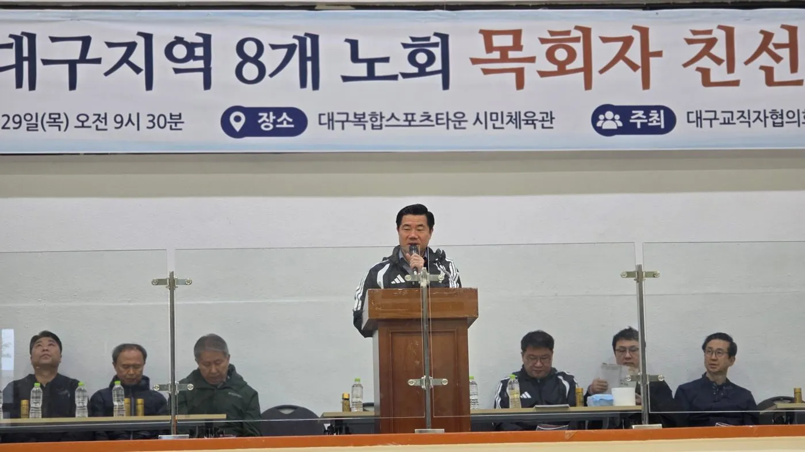
인생의 아름다움은 얼마나 오랫동안 머물렀느냐가 아니라, 얼마나 사랑하고 무엇을 남겼느냐에 있습니다. 오늘의 승리는 함께 서로 기뻐하고, 손을 잡아주고, 사랑으로 하나 되는 데 있습니다. — 이정근 대회장 환영사 중, 제29회 대회 책자
"우리는 한 가족입니다" — 2부 개회식
2부 진행은 진행위원장 라아론 목사(대구북성교회)가 사회를 맡았다. 대구교직자협의회 임원들이 단상에 올라 참석자들에게 인사했고, 정명철 대표회장(대흥교회)이 대회사를 전했다.
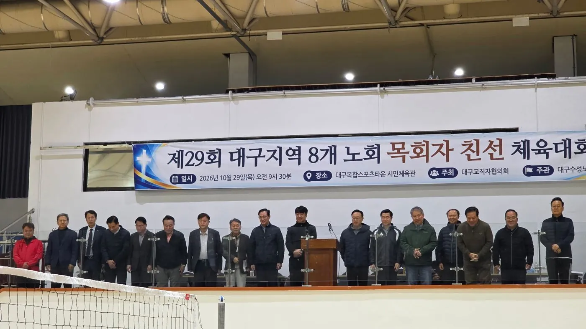
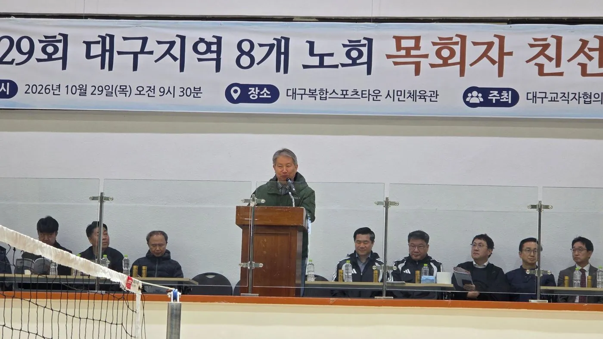
"우리는 한 가족입니다." "우리는 함께 주님의 교회를 세워가는 동역자입니다." "우리는 복음을 전하고 영혼을 세워가는 주님의 제자들입니다." — 정명철 대표회장 대회사 중, 제29회 대회 책자
이어 이정근 대회장의 환영사와 총회 부총회장 송기섭 목사의 축사 순서에 이어, 총회 부서기 박기준 목사가 단상에 올라 격려사를 전하며 8개 노회 목회자들의 연합을 응원했다.
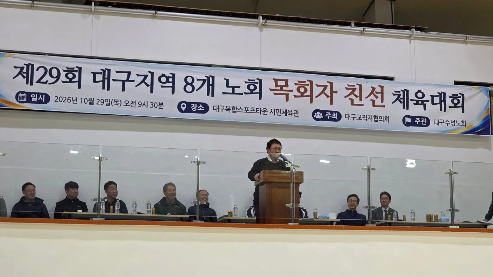
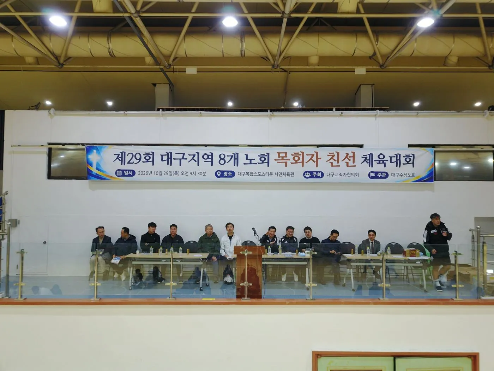
내빈 인사가 끝나자 선수대표 최종길 목사가 8개 노회 선수단 앞에서 선서문을 낭독했고, 심판위원장 김종균 목사(대구동성교회)가 경기 규칙을 발표했다. 심판위원회는 판정을 존중하고, 이의는 팀 대표만 정중하게 제기하며, 항의로 경기를 지연하지 않는다는 원칙을 거듭 당부했다.
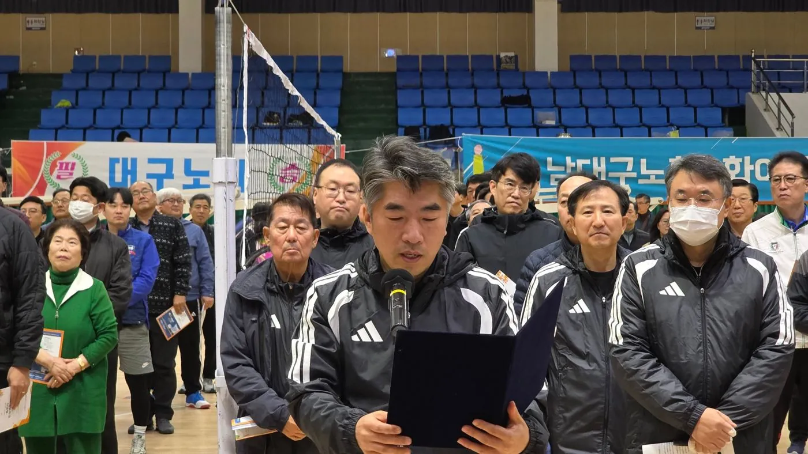
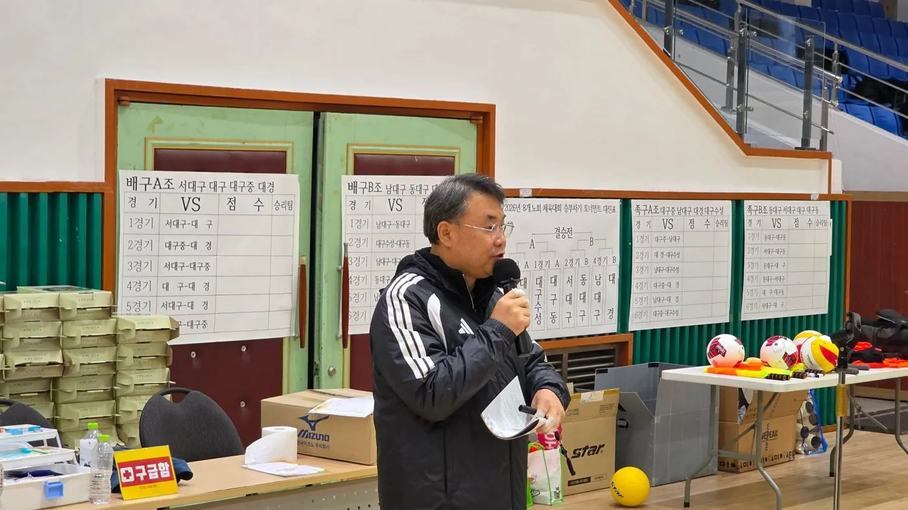
코트를 달군 배구·족구·승부차기
오전 경기는 대구동노회장 피승민 목사의 기도로 시작됐다. 배구(9인제, 15점 1세트)와 족구(5인제, 11점 1세트)는 8개 노회를 A·B 두 조로 나눠 조별 리그전을 치른 뒤 각 조 1위가 결승, 2위가 3·4위전에 나서는 방식으로 진행됐다. 올해 신설된 축구 승부차기는 노회당 5명이 나서는 토너먼트로 치러져 체육관을 한층 뜨겁게 달궜다.
관중석에는 노회마다 '환영·필승' 현수막이 내걸렸고, 공 하나에 탄성과 박수가 오갔다. 모든 경기는 맞붙는 두 노회가 아닌 '제3 노회' 심판이 맡아 공정성을 더했다.
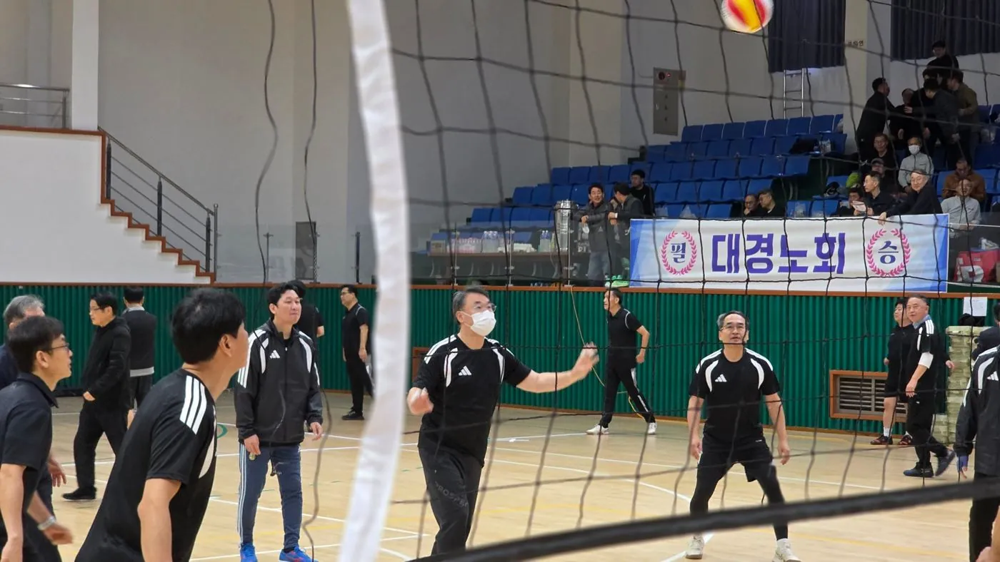
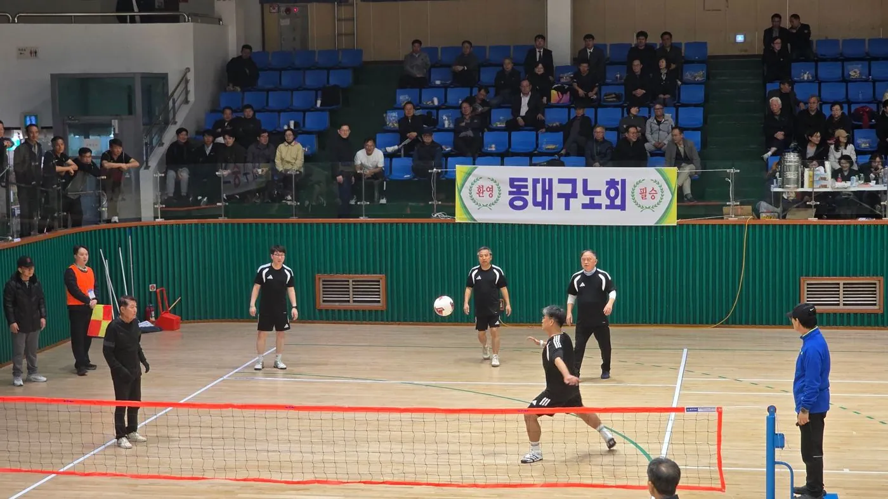
점심시간(12:00~12:50)은 서대구노회장 박정석 목사의 식사 기도로 시작됐다. 노회별로 둘러앉은 목회자들은 오랜만에 얼굴을 맞대고 안부와 목회 이야기를 나눴다.
사모님도, 원로 목사님도 함께 뛰었다
올해 대회의 또 다른 주인공은 사모와 어르신들이었다. 사모 번외경기 '안방 마님 레이스'는 노회별 5명씩 모두 40명이 참가해, 고무장갑·앞치마·머리띠를 착용하고 반환점을 돌아 다음 주자에게 넘겨주는 릴레이로 진행됐다. 앞치마를 두르고 코트를 내달리는 사모들의 모습에 체육관 곳곳에서 웃음이 터졌다.
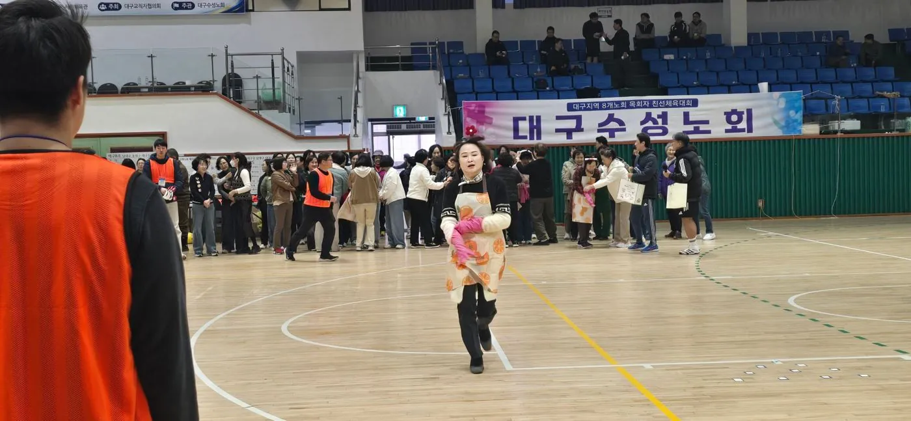
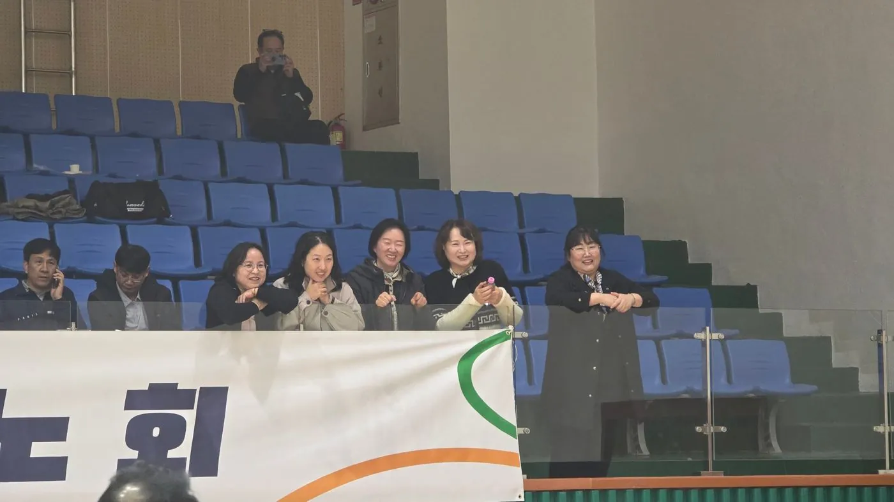
만 65세 이상 목사·사모가 참여한 어르신 번외경기 '걱정은 무너지고, 건강은 세우고'는 대형 플라스틱 볼링 핀을 소프트볼로 쓰러뜨리는 실버 볼링이었다. 공이 핀을 향해 굴러갈 때마다 후배 목회자들이 한목소리로 환호했고, 참가자 전원에게 기본 선물이, 핀을 모두 쓰러뜨린 이에게는 추가 상품이 돌아갔다.
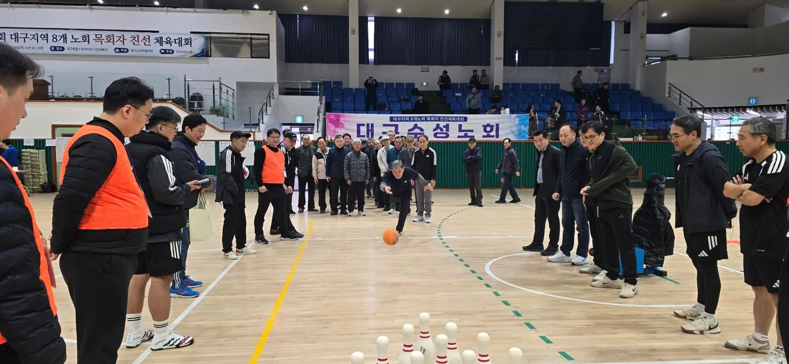
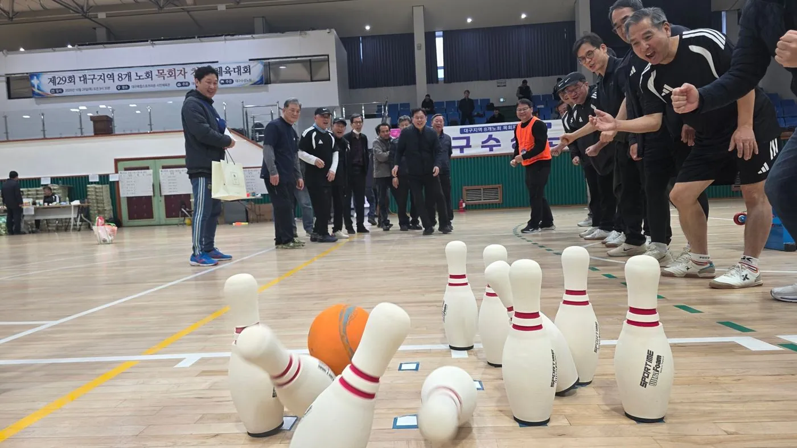
보이지 않는 곳의 땀 — 준비위원회의 팀워크
이날 하루가 매끄럽게 흘러간 데에는 반년 넘게 손발을 맞춘 준비위원회가 있었다. 대회장 이정근 목사와 주최 대표회장 정명철 목사 아래, 실무는 준비위원장 박은제 목사를 중심으로 진행위원장 라아론 목사, 심판위원장 김종균 목사, 관리위원장 서경원 목사(만촌중앙교회), 서기 이대범 목사(대현교회), 회계 추연식 장로(드림교회)가 역할을 나눠 맡았다.
준비위원회는 지난 4월 체육관 예약과 1차 회의로 첫발을 뗀 뒤, 5월 2차 회의에서 축구 승부차기 신설과 사모·어르신 번외경기를 확정했다. 6월 11일에는 준비위원과 실무위원이 함께 모여 경기 규칙 설명과 조 편성 추첨을 진행했다. 8개 노회 서기들은 준비위원으로, 노회마다 1명씩 선임된 실무위원은 선수 선발과 참가비, 광고 모집, 심판 추천을 책임졌다. 대회 책자에는 59개 교회가 광고로 힘을 보탰다.
진행위원장 라아론 목사(대구북성교회) — 2부 개회식·경기 진행
심판위원장 김종균 목사(대구동성교회) — 8개 노회 추천 심판진 24명 총괄
관리위원장 서경원 목사(만촌중앙교회) · 서기 이대범 목사(대현교회) · 회계 추연식 장로(드림교회)
준비위원·실무위원 — 8개 노회 서기와 노회별 실무위원 각 1명
특히 심판진 구성은 '연합'의 정신을 그대로 보여 줬다. 8개 노회가 배구·족구·승부차기 종목별로 1명씩 모두 24명의 심판을 추천했고, 경기마다 다른 노회 심판이 휘슬을 잡도록 배치해 판정 시비의 여지를 줄였다. 준결승·결승에서는 심판이 출전 팀과 같은 노회 소속이면 다른 노회 심판으로 바꾸는 규정까지 미리 마련했다. 노회 경계를 넘어 서로를 믿고 맡긴 이 구조가, 승패보다 화합이 앞서는 대회 분위기를 만들었다.
이정근 대회장은 환영사에서 "나무에 달려 있는 열매는 보이지 않는 곳에서 묵묵히 견뎌 온 시간과 인내에 대한 보상"이라고 했다. 본부석과 코트 뒤편에서 대진표를 고치고, 기자재를 나르고, 경기 시간을 맞춘 준비위원과 실무위원들의 수고가 바로 그 '보이지 않는 곳의 열매'였다.
우승기는 대경노회로… 차기 대회는 대구중노회가
3부 시상식은 준비위원장 박은제 목사의 사회로 대구중노회장 오세태 목사의 기도로 시작됐다. 박은제 준비위원장이 종목별 성적을 발표했고, 이정근 대회장이 입상 노회에 시상했다.
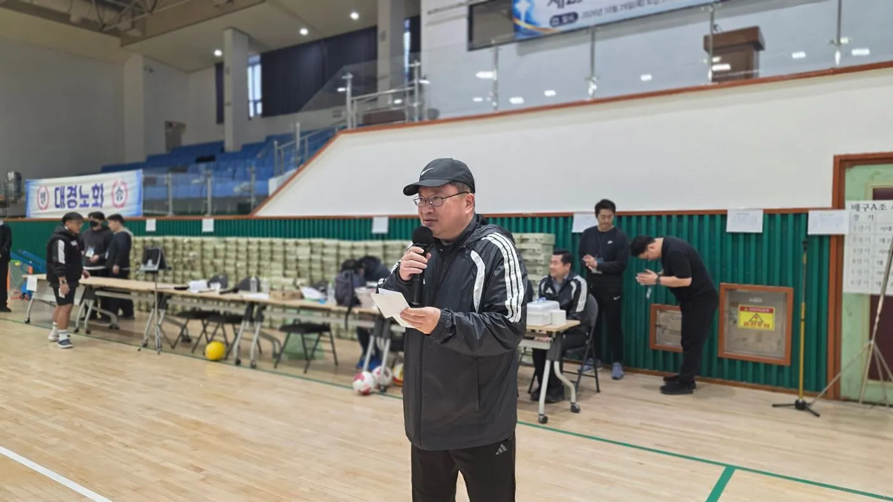
영예의 종합 우승은 대경노회가 차지했다. 대경노회 대표는 대구 8개 노회의 이름이 새겨진 우승기를 넘겨받으며 동료 목회자들의 박수를 받았다. 우승기를 둘러싼 승부였지만, 시상식장에는 이긴 노회와 진 노회의 구분 없이 축하와 격려가 함께 오갔다.
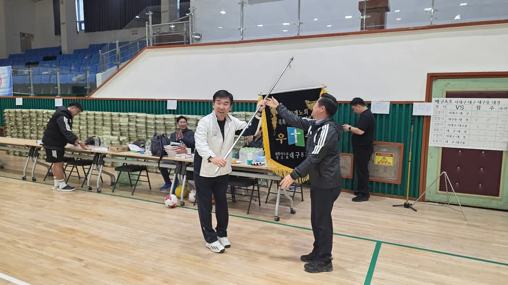
이날 대회에서는 차기 주관 노회도 확정됐다. 제30회 대회는 대구수성노회에 이어 대구중노회가 주관을 맡는다. 올해 대회를 이끈 대구수성노회는 대구중노회에 주관을 인계하며 연합의 바통을 넘겼다.
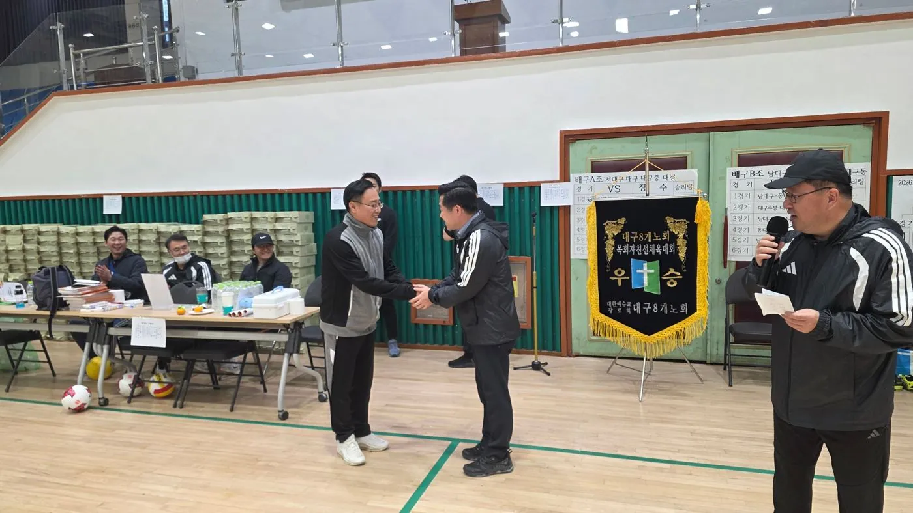
모든 일정은 대구노회장 김귀식 목사의 축도로 마무리됐다.
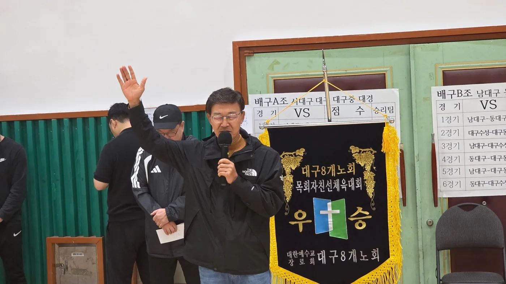
서른 번째 대회를 향해
1993년 6개 노회의 친선 경기로 출발한 대회는 어느덧 29회를 맞았다. 승부차기라는 새 종목과 사모·어르신 번외경기를 더한 올해 대회는, 선수로 뛰는 젊은 목회자부터 원로 목사와 사모까지 세대를 아우르는 '목회자 가족 잔치'로 한 걸음 더 나아갔다. 정명철 대표회장이 대회사에서 소망한 대로 "8개 노회가 더욱 하나 되고, 목회자들이 더욱 가까워지며, 교회들이 함께 힘을 모아 하나님의 나라를 아름답게 세워가는" 하루였다. 서른 번째 대회의 휘슬은 이제 대구중노회가 이어받는다.